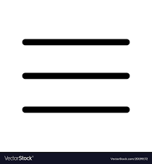
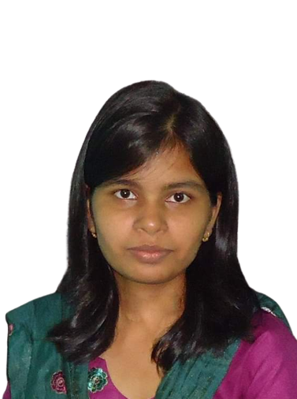

Welcome to my webpage.
I am Haripriya Sahoo (Beta). I am a 'Thalassophile'. So I choose my carrier as a ocean engineering researcher. Curretly I am a PhD student in the Department of Marine Enviroment and engineering in National Sun yat-sen university. My research area falls on the wide topic numerical ocean modeling,fluid dynamics and image processing.
Additionally I am a mathematician. I have completed my Master's in Mathematics from the National Institute of Technology Rourkela, India, with the master dessartation in Statistics
Rather than my educational qualification, I love coding. I am an online tutor, web page designer, artist, chess player, writer, blogger, YouTuber.